、 、
假设你去随机问很多人一个很复杂的问题
例如
向我们在第二章讨论的一样
在本章中我们会讨论一下特别著名的集成方法
投票分类
假设你已经训练了一些分类器
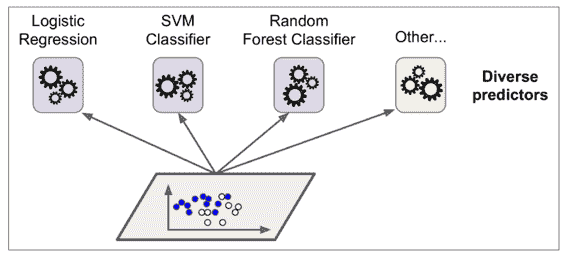
一个非常简单去创建一个更好的分类器的方法就是去整合每一个分类器的预测然后经过投票去预测分类
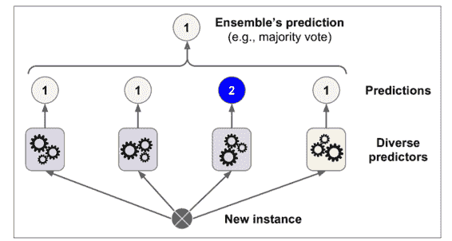
令人惊奇的是这种投票分类器得出的结果经常会比集成中最好的一个分类器结果更好
这怎么可能
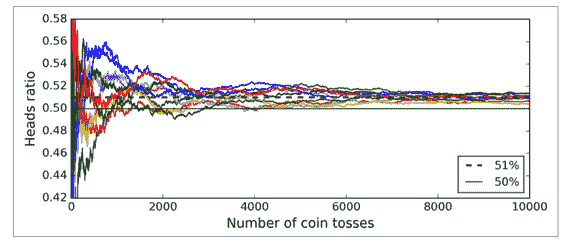
同样的
如果使每一个分类器都独立自主的分类
接下来的代码创建和训练了在 sklearn 中的投票分类器
>>> from sklearn.ensemble import RandomForestClassifier
>>> from sklearn.ensemble import VotingClassifier
>>> from sklearn.linear_model import LogisticRegression
>>> from sklearn.svm import SVC
>>> log_clf = LogisticRegression()
>>> rnd_clf = RandomForestClassifier()
>>> svm_clf = SVC()
>>> voting_clf = VotingClassifier(estimators=[('lr', log_clf), ('rf', rnd_clf),
>>> ('svc', svm_clf)],voting='hard')
>>> voting_clf.fit(X_train, y_train)
让我们看一下在测试集上的准确率
>>> from sklearn.metrics import accuracy_score
>>> for clf in (log_clf, rnd_clf, svm_clf, voting_clf):
>>> clf.fit(X_train, y_train)
>>> y_pred = clf.predict(X_test)
>>> print(clf.__class__.__name__, accuracy_score(y_test, y_pred))
LogisticRegression 0.864
RandomForestClassifier 0.872
SVC 0.888
VotingClassifier 0.896
你看
如果所有的分类器都能够预测类别的概率predict_proba()方法voting="hard"设置为voting="soft"来保证分类器可以预测类别概率probability hyperparameter设置为Truepredict_proba()方法
Bagging 和 Pasting
就像之前讲到的
换句话说
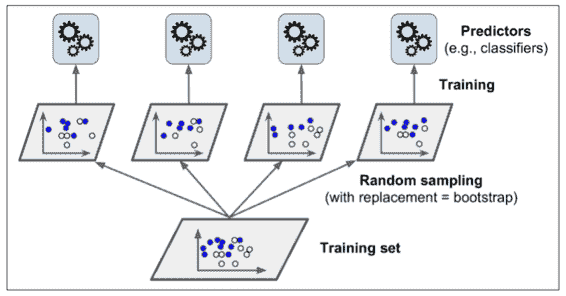
当所有的分类器被训练后
正如你在图 7-4 上所看到的
在 sklearn 中的 Bagging 和 Pasting
sklearn 为 Bagging 和 Pasting 提供了一个简单的 APIBaggingClassifier类BaggingRegressorbootstrap=Falsen_jobs参数告诉 sklearn 用于训练和预测所需要 CPU 核的数量
>>>from sklearn.ensemble import BaggingClassifier
>>>from sklearn.tree import DecisionTreeClassifier
>>>bag_clf = BaggingClassifier(DecisionTreeClassifier(), n_estimators=500,
>>> max_samples=100, bootstrap=True, n_jobs=-1)
>>>bag_clf.fit(X_train, y_train)
>>>y_pred = bag_clf.predict(X_test)
如果基分类器可以预测类别概率predict_proba()方法BaggingClassifier会自动的运行软投票
图 7-5 对比了单一决策树的决策边界和 Bagging 集成 500 个树的决策边界
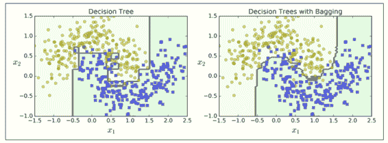
Bootstrap 在每个预测器被训练的子集中引入了更多的分集
Out-of-Bag 评价
对于 Bagging 来说BaggingClassifier默认采样BaggingClassifier默认是有放回的采样m个实例 bootstrap=Truem是训练集的大小
因为在训练中分类器从来没有看到过 oob 实例
在 sklearn 中BaggingClassifier来自动评估时设置oob_score=True来自动评估oob_score_来显示
>>> bag_clf = BaggingClassifier(DecisionTreeClassifier(), n_estimators=500,bootstrap=True, n_jobs=-1, oob_score=True)
>>> bag_clf.fit(X_train, y_train)
>>> bag_clf.oob_score_
0.93066666666666664
根据这个 obb 评估BaggingClassifier可以再测试集上达到 93.1% 的准确率
>>> from sklearn.metrics import accuracy_score
>>> y_pred = bag_clf.predict(X_test)
>>> accuracy_score(y_test, y_pred)
0.93600000000000005
我们在测试集上得到了 93.6% 的准确率
对于每个训练实例 oob 决策函数也可通过oob_decision_function_变量来展示predict_proba()时
>>> bag_clf.oob_decision_function_
array([[ 0., 1.], [ 0.60588235, 0.39411765],[ 1., 0. ],
... [ 1. , 0. ],[ 0., 1.],[ 0.48958333, 0.51041667]])
随机贴片与随机子空间
BaggingClassifier也支持采样特征max_features和bootstrap_features控制max_samples和bootstrap一样
当你在处理高维度输入下bootstrap=False和max_samples=1.0bootstrap_features=True并且/或者max_features小于 1.0
采样特征导致更多的预测多样性
随机森林
正如我们所讨论的max_samples设置为训练集的大小BaggingClassifier然后把它放入DecisionTreeClassifier相反RandomForestClassifierRandomForestRegressor
>>>from sklearn.ensemble import RandomForestClassifier
>>>rnd_clf = RandomForestClassifier(n_estimators=500, max_leaf_nodes=16, n_jobs=-1)
>>>rnd_clf.fit(X_train, y_train)
>>>y_pred_rf = rnd_clf.predict(X_test)
除了一些例外RandomForestClassifier使用DecisionTreeClassifier的所有超参数BaggingClassifier的超参数加起来来控制集成本身
随机森林算法在树生长时引入了额外的随机BaggingClassifier大致相当于之前的randomforestclassifier
>>>bag_clf = BaggingClassifier(DecisionTreeClassifier(splitter="random", max_leaf_nodes=16),n_estimators=500, max_samples=1.0, bootstrap=True, n_jobs=-1)
极随机树
当你在随机森林上生长树时
这种极随机的树被简称为 Extremely Randomized Trees
你可以使用 sklearn 的ExtraTreesClassifier来创建一个 Extra-Tree 分类器RandomForestClassifier是相同的ExtraTreesRegressor跟RandomForestRegressor也是相同的 API
我们很难去分辨ExtraTreesClassifier和RandomForestClassifier到底哪个更好
特征重要度
最后feature_importances_变量来查看结果RandomForestClassifier模型
>>> from sklearn.datasets import load_iris
>>> iris = load_iris()
>>> rnd_clf = RandomForestClassifier(n_estimators=500, n_jobs=-1)
>>> rnd_clf.fit(iris["data"], iris["target"])
>>> for name, score in zip(iris["feature_names"], rnd_clf.feature_importances_):
>>> print(name, score)
sepal length (cm) 0.112492250999
sepal width (cm) 0.0231192882825
petal length (cm) 0.441030464364
petal width (cm) 0.423357996355
相似的
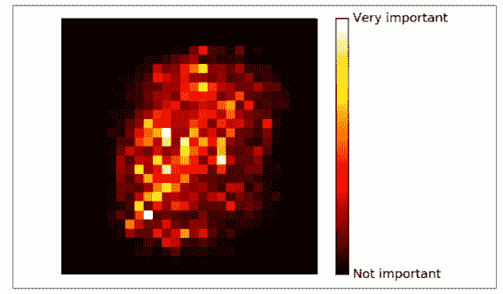
随机森林可以非常方便快速得了解哪些特征实际上是重要的
提升
提升
Adaboost
使一个新的分类器去修正之前分类结果的方法就是对之前分类结果不对的训练实例多加关注
举个例子
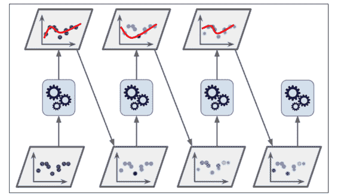
图 7-8 显示连续五次预测的 moons 数据集的决策边界
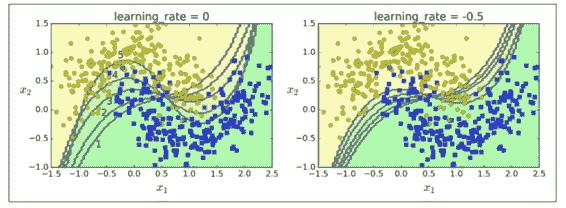
一旦所有的分类器都被训练后
序列学习技术的一个重要的缺点就是
让我们详细看一下 Adaboost 算法wi初始都被设为1/m第一个分类器被训练r1在训练集上算出
公式 7-1j个分类器的权重误差率
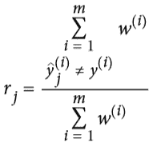
其中y_tilde[j]^(i)是第j个分类器对于第i实例的预测
分类器的权重α[j]随后用公式 7-2 计算出来η是超参数学习率
公式 7-2
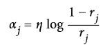
接下来实例的权重会按照公式 7-3 更新
公式 7-3 权重更新规则
对于i=1, 2, ..., m
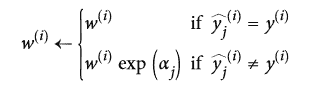
随后所有实例的权重都被归一化Σ w[i], i = 1 -> m整除
最后
为了进行预测α[j]简单的计算了所有的分类器和权重
公式 7-4
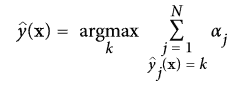
其中N是分类器的数量
sklearn 通常使用 Adaboost 的多分类版本 SAMMEpredict_proba()SAMME.R的变量R代表
接下来的代码训练了使用 sklearn 的AdaBoostClassifier基于 200 个决策树桩 Adaboost 分类器AdaBoostRegressormax_depth=1的决策树-换句话说AdaBoostClassifier的默认基分类器
>>>from sklearn.ensemble import AdaBoostClassifier
>>>ada_clf = AdaBoostClassifier(DecisionTreeClassifier(max_depth=1), n_estimators=200,algorithm="SAMME.R", learning_rate=0.5)
>>>ada_clf.fit(X_train, y_train)
如果你的 Adaboost 集成过拟合了训练集
梯度提升
另一个非常著名的提升算法是梯度提升
让我们通过一个使用决策树当做基分类器的简单的回归例子DecisionTreeRegressor去拟合训练集
>>>from sklearn.tree import DecisionTreeRegressor
>>>tree_reg1 = DecisionTreeRegressor(max_depth=2)
>>>tree_reg1.fit(X, y)
现在在第一个分类器的残差上训练第二个分类器
>>>y2 = y - tree_reg1.predict(X)
>>>tree_reg2 = DecisionTreeRegressor(max_depth=2)
>>>tree_reg2.fit(X, y2)
随后在第二个分类器的残差上训练第三个分类器
>>>y3 = y2 - tree_reg1.predict(X)
>>>tree_reg3 = DecisionTreeRegressor(max_depth=2)
>>>tree_reg3.fit(X, y3)
现在我们有了一个包含三个回归器的集成
>>>y_pred = sum(tree.predict(X_new) for tree in (tree_reg1, tree_reg2, tree_reg3))
图 7-9 在左栏展示了这三个树的预测
我们可以使用 sklean 中的GradientBoostingRegressor来训练 GBRT 集成RandomForestClassifier相似max_depthmin_samples_leaf等等n_estimators
>>>from sklearn.ensemble import GradientBoostingRegressor
>>>gbrt = GradientBoostingRegressor(max_depth=2, n_estimators=3, learning_rate=1.0)
>>>gbrt.fit(X, y)
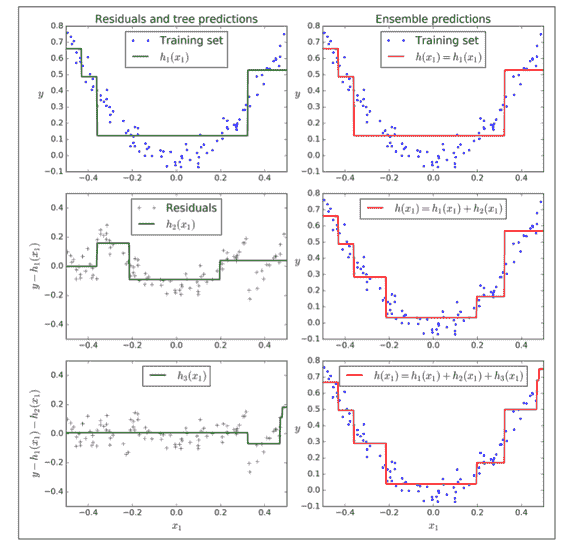
超参数learning_rate 确立了每个树的贡献
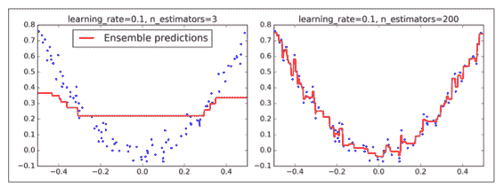
为了找到树的最优数量staged_predict()
>>>import numpy as np
>>>from sklearn.model_selection import train_test_split
>>>from sklearn.metrics import mean_squared_error
>>>X_train, X_val, y_train, y_val = train_test_split(X, y)
>>>gbrt = GradientBoostingRegressor(max_depth=2, n_estimators=120)
>>>gbrt.fit(X_train, y_train)
>>>errors = [mean_squared_error(y_val, y_pred)
for y_pred in gbrt.staged_predict(X_val)]
>>>bst_n_estimators = np.argmin(errors)
>>>gbrt_best = GradientBoostingRegressor(max_depth=2,n_estimators=bst_n_estimators)
>>>gbrt_best.fit(X_train, y_train)
验证错误在图 7-11 的左面展示
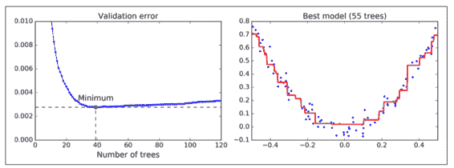
你也可以早早的停止训练来实现早停warm_start=True来实现 fit()方法被调用时 sklearn 保留现有树
>>>gbrt = GradientBoostingRegressor(max_depth=2, warm_start=True)
min_val_error = float("inf")
error_going_up = 0
for n_estimators in range(1, 120):
gbrt.n_estimators = n_estimators
gbrt.fit(X_train, y_train)
y_pred = gbrt.predict(X_val)
val_error = mean_squared_error(y_val, y_pred)
if val_error < min_val_error:
min_val_error = val_error
error_going_up = 0
else:
error_going_up += 1
if error_going_up == 5:
break # early stopping
GradientBoostingRegressor也支持指定用于训练每棵树的训练实例比例的超参数subsamplesubsample=0.25
也可能对其他损失函数使用梯度提升
Stacking
本章讨论的最后一个集成方法叫做 Stacking
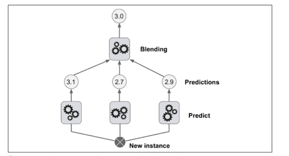
为了训练这个 blender
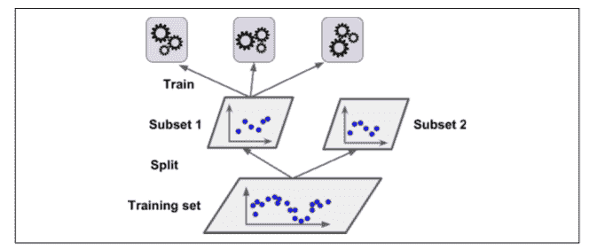
接下来
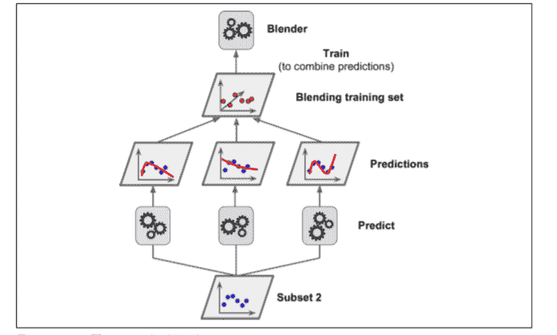
显然我们可以用这种方法训练不同的 blender
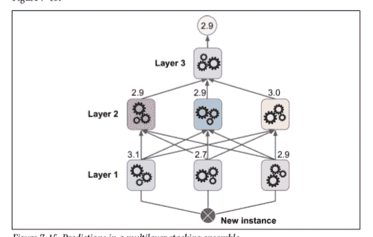
然而不幸的是
练习
- 如果你在相同训练集上训练 5 个不同的模型
， ， ？ ？ 。 - 软投票和硬投票分类器之间有什么区别
？ - 是否有可能通过分配多个服务器来加速 bagging 集成系统的训练
？ ， ， ， ？ - out-of-bag 评价的好处是什么
？ - 是什么使 Extra-Tree 比规则随机森林更随机呢
？ ？ ？ - 如果你的 Adaboost 模型欠拟合
， ？ - 如果你的梯度提升过拟合
， ？ - 导入 MNIST 数据
（ ） ， ， ， （ ， ， ） 。 ， ， 。 ， ， 。 ， 。 ， ？ - 从练习 8 中运行个体分类器来对验证集进行预测
， ： ， ， 。 ， ， ！ 。 ， ， 。 ？
练习的答案都在附录 A 上